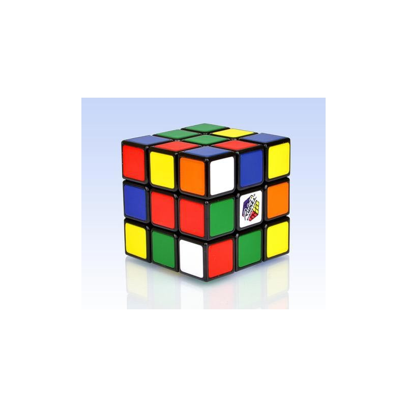

Welcome to Rubiko-kubas
Rubiko kubas, suktukas, sensorika, nusiraminti, poilsis, nervinė įtampa - lsveikata.lt
2020.10.29 03:53Ketvirtadienis
04 val. 53 min. Toggle navigation NAUJIENŲ SRAUTAS Lsveikata TV Gydytojas ir pacientas SVEIKATOS VADYBA Budinti vaistinė Razinka Sveika šeima Svetur Gydytojui praktikui
Žaiskite į sveikatą!
Greta Vanagienė 2019-09-23 Kai vaikystė pamoja ranka ir pereinama į paauglystę bei brandos etapą, keičiasi ne tik domėjimosi laukas, bet ir įpročiai. Vienas ryškiausių – atsisveikinimas su žaislais. Specialistų teigimu, žaidžiama ne tik dėl patiriamo malonumo ar pramogos, bet ir siekiant atsipalaiduoti, susikoncentruoti, numalšinti stresą ar išvaduoti mintis nuo per didelio informacijos srauto.Sensorinės priemonės, tokios kaip dygliuoti ar antistresiniai kamuoliukai, Rubiko kubikas, įvairūs suktukai, dėlionės dirbantiems įtemptą darbą yra greičiausias būdas nusiraminti ir pailsinti mintis. Dirbantiems įtemptą darbą Kaip aiškina kineziterapeutas Paulius Laguninas, sensorinės priemonės, tokios kaip dygliuoti ar antistresiniai kamuoliukai, Rubiko kubikas, įvairūs suktukai, dėlionės dirbantiems įtemptą darbą yra greičiausias būdas nusiraminti ir pailsinti mintis.
„Biurų darbuotojams dažnai tenka susidoroti su didžiuliu informacijos, kurią reikia dar ir „sukramtyti“, srautu. Deja, neretai stengiantis pailsėti per minutės pertraukėles lekiama parūkyti“, - pastebi kineziterapeutas Paulius Laguninas. Anot jo, šį žalingą įprotį puikiausiai gali pakeisti kelias minutes delnuose sukinėjant kamuoliuką ar Rubiko kubą.
Pažadinti mintis Minėtos sensorinės priemonės ne tik atpalaiduoja ir sumažina nervinę įtampą, bet ir padeda sutelkti dėmesį, stimuliuoti protinę veiklą. „Sensorinės priemonės, pavyzdžiui, dygliuotas kamuoliukas yra skirtas dirginti kūno vietas. Dirginimo sukeltas signalas keliauja į smegenų dalis, kurios atsakingos už vieno ar kito organo veiklą ir jutimus. Dėl kai kurių neurologinių ligų dirginimas būna nutrūkęs, tai yra smegenys nebegauna nervinio impulso ir nesugeba atpažinti pojūčių, pavyzdžiui, neatskiria šalto nuo karšto. Pirmoji pagalba siekiant „prižadinti“ šiuos jutimus yra tie patys žaidimai: Rubiko kubas, antistresiniai kamuoliukai. Be to, tinka visos priemonės, kurios skirtos vaikams ugdyti, pavyzdžiui, figūrėlių dėliojimas į kibirėlį su išpjautomis figūromis, suktukas, dėlionė“, - vardina specialias. Suktukas Paprastas iš metalo ar plastiko pagamintas žaislas su nedideliu guoliu viduryje. Jį malonu sukti ir balansuoti ant piršto. Kai kurie, labiau įgudę suktukų mėgėjai jais atlieka ir įvairius triukus. Burbulinė plėvelė Bene mėgstamiausias visų laikų antistresinis žaislas - paprasta burbulinė pakavimo plėvelė. Sprogdinti burbulus mėgsta ir jauni, ir seni, tačiau džiaugsmas greitai baigiasi, kai susprogdinami visi turimo gabalėlio burbulai. Visgi, kinai atrado išeitį sukurdami žaislą, kuris imituoja burbulinės plėvelės sprogdinimo pojūtį. Streso kamuoliukas Tai - paprastas elastingas kamuoliukas, kurį malonu minkyti rankose, mėtyti ar ritinėti ant darbo stalo. Žmonės per kelis dešimtmečius įsitikino tokių žaislų efektyvumu - jie padeda atsipalaiduoti ir bent trumpam pamiršti slegiančius ir stresą keliančius rūpesčius. Tarp kitko Rubiko kubas pasiekė aukščiausią populiarumo tašką ir tapo popkultūros simboliu XX amžiaus 9 dešimtmečio pradžioje. Vien nuo 1980 iki 1982 buvo parduota daugiau kaip 100 mln. kubų. 1980 ir 1981 metais Rubiko kubas gavo BART Toy of the Year apdovanojimą kaip geriausias metų žaislas. lsveikata.lt „Facebook“. Būkime draugai !Komentuoti:
Naujienų srautas
Vilniuje, Kaune ir Klaipėdoje skelbiamas karantinas, plečiamas kaukių dėvėjimas
Nauja tvarka dėl izoliacijos: kas keičiasi
I. Šimonytė planą dėl tolesnės kovos su koronavirusu žada jau perėmus valdžią
Ribojamas barų darbo laikas, penktadalyje savivaldybių įvedamas karantinas
D. Grybauskaitė: šie rinkimai – geriausia, kas galėjo nutikti Lietuvai sudėtingu laiku
Vyriausybėje bus svarstoma papildomą apmokėjimą skirti ir rezidentams
Išrinktas naujasis Lietuvos sveikatos mokslų universiteto rektorius
Išmokėta 13 mln. eurų gydymo įstaigoms už išlaidas, patirtas kovoje su koronavirusu
Lsveikata TV
Į anoniminius paauglių klausimus atsako gydytoja akušerė ginekologė Milda Dubininienė
Skirtingų Spalvų rubrikos „Patarimai“ laida apie priklausomybes
Skirtingos spalvos: kunigo Kęstučio Dvarecko istorija
Tabako žalos mažinimui – išskirtinis šalies sveikatos specialistų dėmesys (tiesioginė transliacija nuo 15 val.)
Pokalbis su psichologu prof. dr. Gediminu Navaičiu apie laimės ekonomiką (8 dalis)
Pokalbis su psichologu prof. dr. Gediminu Navaičiu apie laimės ekonomiką (7 dalis)
Gydytojas ir pacientas
Medikai: be tabako žalos mažinimo programų neapsieisime
Vilniuje į apskritojo stalo diskusiją rinkosi vieni garsiausių kardiologijos, pulmonologijos, onkologijos, psichiatrijos ir kitų s...Nugaros smegenų navikas kėsinosi į gyvybę
Telšiškė Kornelija Laurinavičiūtė (20 m.) jau vaikystėje žinojo turinti stuburo problemų, tačiau apie nugaros smegen...Pagalbos tiltai
Kalba ekspertai: antroji viruso banga bus stipresnė?
Kalba ekspertai: man 60-imt, susirgau COVID-19
Kalba ekspertai: kaip mutuoja virusai?
Specialistų konsultacija
Klausk gydytojo Naujausi atsakymai - Eteriniai aliejai peršalimo ligų negydo - Kanapės (ne)sukels revoliucijos - Sąnarių traškėjimas: ar tai tik „nekaltas“ simptomas - Jei vaikas „be stabdžių“ - Spalis - skiepijimosi nuo gripo sezono pradžia - Depresijai metų laikas nesvarbuSVEIKATOS VADYBA
Mykolo Marcinkevičiaus ligoninėje – naujo priestato statybos
Respublikinė Klaipėdos ligoninė – patrauklus darbdavys jaunimui
Kauno miesto poliklinika: šiuolaikinės vadybos rezultatas – patrauklaus darbdavio reputacija
Išmoktos pandemijos pamokos, sustyguoti procesai bei geros tendencijos
Daugkartinio naudojimo respiratoriai pradedami gaminti Lietuvoje
Šiauliuose „karščiavimo klinika“ jau veikia
Budinti vaistinė
COVID-19 pandemija turėjo įtakos privatumo pokyčiams vaistinėje
Saugaus atstumo laikymasis viešose vietose – viena svarbių apsaugos nuo koronaviruso priemonių. „Eurovaistinės&...Vaistininkai ragina SAM greičiau apsispręsti dėl skiepijimo vaistinėse
Lietuvoje prasidėjus gripo sezonui į pacientų skiepijimą vis dar negali įsitraukti šalies vaistinės. Lietuvos vaistinių aso...razinka
Andrius Užkalnis: „Man - ne žvaigždžių liga“
Elžbieta Latėnaitė: „Žmonijos progresą greitina tik besiremiantieji mokslu“
Dalia Kutkaitė: „Esame kaip pilypai iš kanapių“
Rūta Loop: „Jausmas, kai negali gyvai bendrauti – labai keistas“
Danas Pankevičius: „Kelyje esu jau dvidešimt metų“
A.Kuzmickaitė-Prūsaitienė: „Karantinas paskatino rengtis patogiai“
Sveikatos horoskopas
Spalio 12 - 18 d.
AvinasPirmadienį ribokite kavos ir juodosios arbatos kiekį, daugiau gerkite vandens. Antradienį jausitės žvalūs ir kupini teigiamų emocijų. Penktadienį bus jautrūs regos organai. Savaitgalį stiprinkite imuninę sistemą.
Pakalbėkim apie tai
Seksas paauglystėje: išteisinti ar nuteisti?
Kaip pačiam netapti priekabiautoju?
Ženklai, išduodantys, kad vaikas patiria seksualinę prievartą
Svetur
Moldova seksualiniu švietimu nustebino Europą
Moldovos Respublikoje atliktas precedento neturintis darbas, siekiant užtikrinti, kad paaugliai būtų tinkamai šviečiami seksualiniais klausimais, galėtų naudotis seksualinės ir reprodukcinės sveikatos paslaugomis.Nobelio medicinos premija paskirta virusologams H. Alteriui, Ch. Rice'ui ir M. Houghtonui
D. Trumpui ir M. Trump testais patvirtinta COVID-19, jie karantinuojasi
R.B.Ginsburg: liberalų ikoną sustabdė tik vėžys
Vakcinų nuo COVID-19 lenktynės. Kas laimi?
A.Navalno kova už gyvybę dar nesibaigė
Saviizoliacijos nesilaikymas išvertė iš posto
Redakcijos skiltis
Gimęs avinu liūtu netapsiKomentarai
Algirdas Klimaitis Priešinimo ir skaldymo valdysena Henrikas Vaitiekūnas Už bausmę – į rožinę kamerą! Henrikas Vaitiekūnas Kiek vorų jau suvalgėte?Naujas numeris
www.nuoroda.lt Trumpas aprašymas Trumpas aprašymasTrumpas aprašyma
Kur eiti?
- Pasaulinė širdies diena
Data: 2020.09.29- Sveikatos dienos 2020
Data: 2020.02.21- Vidaus ligų diagnostikos ir gydymo metodai
Data: 2020.02.20- Aktualūs endokrinologijos klausimai. Tarpdalykinis gydytojų bendradarbiavimas
Data: 2020.02.14- Farmacijos aktualijos
Data: 2020.02.07 Apie lsveikata.lt Reklama Kontaktai Privatumo ir saugumo politika